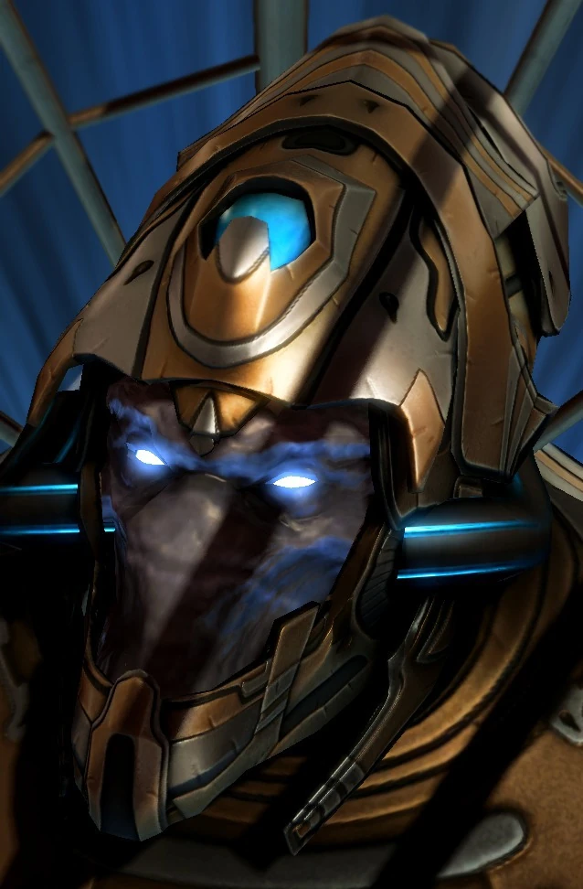

Феникс
| Феникс | |
|  | |
| Информация о юните | |
| Тип: | Возудшная единица |
| Описание: | Может использовать гравитационный луч |
| Построен из: | Звездные врата |
| Стоимость: |  150 150  100 100  25 25  2 2 |
| Горячие клавиши: | X |
| Атака: Ионные пушки | |
| Цели: | Воздушные |
| Урон | 5(+1)(х2) (х8 перехватчиков) |
| DPS: | 12.7(+2.5) |
| Перезарядка: | 0.79 |
| Бонус: | +5 по легким единицам |
| Бонус DPS: | +12.7 против легких единиц |
| Ранг: | 5(+2) |
| Статистика юнита | |
| Защита: |  120 120  60 60  0 (+1) 0 (+1) |
| Атрибуты: | Легкий Механический |
| Зрение: | 10 |
| Скорость: | 5.95 |
| Силен против: | Баньши Излучатель пустоты Муталиск |
| Слаб против: | Крейсер Авианосец Губитель |
Обзор
Феникс - смертоносный космический корабль, предназначенный для воздушных преследований, «Феникс» очень маневренен, обладает большой скоростью и способен перехитрить практически любого противника. Используемый к 2502 году, «Феникс» быстро заменяет старые «Скауты» и «Корсары» в роли истребителей для завоевания превосходства в воздухе для протоссов. Патрули «Феникс» — обычное явление на внешнем краю территории протоссов, где они прочесывают глубокий космос в поисках инопланетных угроз. Одна ударная группа «Феникс» может удержать вражескую армию, даже если она значительно превосходит численностью.
К 2504 году талдаримы включили фениксов в свой арсенал. Несмотря на то, что они предпочитали подавляющую силу, они понимают ценность необходимости быть быстрыми и смертоносными, поэтому они держали флот фениксов, украденных у тамплиеров.
В то время как Очистители регулярно отдают предпочтение своим миражам, они сохраняют флот автоматических фениксов на случай, если технология фазирования миражей не понадобится.
В период реконструкции после Конца войны Племя Шелак заказало несколько фениксов, смоделированных по образцу эскортных кораблей касты Судей. Несмотря на их мастерство, они стали спорными символами.
Ихан-рии построили фениксов из камня, что не уменьшило его маневренность или максимальную скорость, но сделало их грозными ракетами при аварийной посадке.
Движение
«Феникс» приводится в движение компактным инерционным двигателем, который окружает корабль варп-полем, позволяя быстро перемещаться в глубоком космосе или планетарной атмосфере.
Двойные мощные плазменные двигатели дополняют двигатель, что делает «Феникс» грозным кораблем-перехватчиком. Кроме того, энергетическое переплетение покрывает крылья Феникса, делая его похожим на печатную плату. На самом деле он сделан из светочувствительных волокон, которые поглощают, направляют и перенаправляют все виды энергии, включая псионическую энергию пилота. Основная функция плетения — поддерживать когерентность варп-поля, покрывающего фюзеляж «Феникса», и повышать устойчивость и маневренность корабля при крене, качке или скольжении на высоких скоростях.
Вооружение
Двойное ионное бластерное вооружение «Феникса» отлично подходит для ведения боя воздух-воздух и наносит удар по противникам, лишенным брони. Его основное вооружение, бластеры, разрушает свои цели с помощью коротковолновых энергетических лучей, состоящих из отрицательно заряженных ионов, хотя его можно использовать только против воздушных целей. Эти пушки предназначены для того, чтобы «Феникс» мог стрелять во время движения, но их короткая длина волны ограничивает дальность полета каждого выстрела, а также урон, наносимый тяжелобронированным целям. Эффективная боевая дальность пушек представляла собой проблему, пока протоссы не начали заменять старые фокусирующие линзы более совершенными анионными импульсными кристаллами.
Столкнувшись с более опасными врагами, пилот Феникса может выпустить недолговечный гравитационный луч, перегружая варп-поле корабля за счет его инерционного двигателя. В результате получается луч, состоящий из антигравитации, который превращает свою цель в почти невесомый объект, обездвиживая ее на несколько драгоценных секунд. Однако это происходит за счет мобильности Феникса. Луч изначально задумывался как оружие последней инстанции, но с тех пор был принят Великим Флотом как эффективное оружие управления.
В 2506 году фазовый кузнец Каракс использовал солярит для улучшения систем управления питанием феникса. Это позволило фениксу нацеливаться на несколько целей с помощью своего гравитонного луча и использовать луч, не отвлекая энергию от оружия или двигательных установок феникса.
Дополнительная информация
Каким бы изощренным и смертоносным ни был «Феникс», слишком часто патрульная эскадрилья оказывается в численном меньшинстве от зергов или терранов. Чтобы преодолеть эту слабость, пилоты-фениксы разработали опасную контруловку. Пилот-феникс может вызвать кратковременный шторм разрушения, перегружая свое варп-поле корабельными ионными бластерами. Разряд с эффектом площади разрушительен и может уничтожить большое количество врагов одновременно, но за это приходится платить: после этого феникс временно становится бессильным и калекой. Осторожные враги научились спасаться от перегрузки фениксов и возвращаться через несколько мгновений, чтобы уничтожить беспомощный корабль. В свою очередь, пилоты-фениксы начали использовать ступенчатые разряды, чтобы поймать своих врагов в паутину разрушения. Эта отчаянная тактика не одобряется командирами протоссов, но стала молчаливо восприниматься как необходимость.
Игровая единица
В игре фениксу не хватает наземной атаки, но он компенсирует это своим гравитонным лучом. Важно отметить, что цели, пораженные Гравитонным лучом, могут быть поражены средствами ПВО, в том числе другими фениксами. Феникс может двигаться и атаковать одновременно, что в сочетании с его высокой скоростью делает его отличным средством для преследования убегающих сил. Это также делает феникса эффективным рейдером экономики, использующим гравитонный луч на рабочих единицах.
Феникс очень хорош в уничтожении легких воздушных юнитов, таких как муталиски (особенно с улучшением дальности). Улучшенный диапазон Феникса вдвое больше, чем у муталиска, что позволяет игрокам легко летать вокруг муталисков, нанося бесплатные удары, при этом муталиски не могут нанести ответный удар из-за их более низкой скорости.
Феникс — эффективная противодействующая единица для викингов, банши и скатов Бездны. Он слаб против сильнобронированных линейных крейсеров, либераторов, авианосцев и коррупционеров. Феникс неэффективен против юнитов, которым он противостоит, когда его численность меньше. Однако он может компенсировать это своей быстрой скоростью.